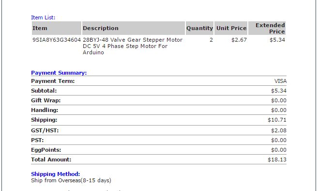
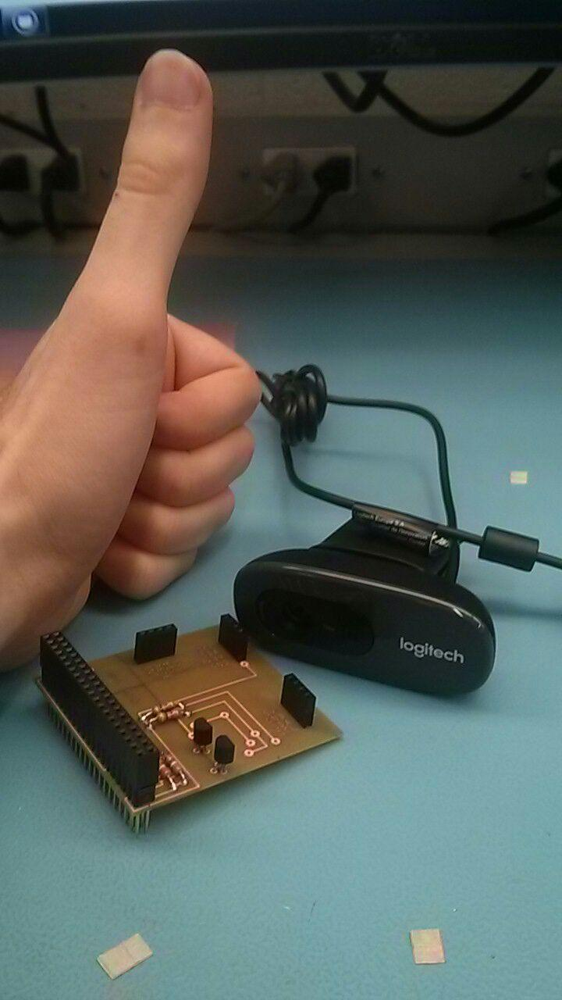
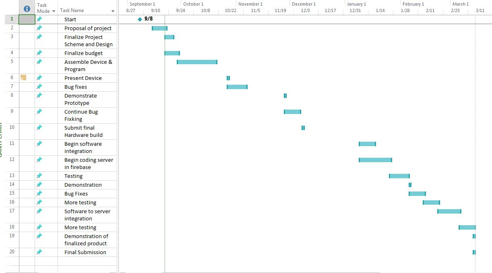

Week 4 Hardware (A - Monday Oct. 2, B - Friday Sept. 29)
Budget for parts needed was calculated and a report was made.

All parts have been aquired, the PCB is nearly complete.
Parts were mostly prepared, some parts were still shipping,
below there is a reciept of some of the parts which are still shipping.


*Friday October 6th Reading day; No classes.
Budget for parts needed was calculated and a report was made.
gantt chart

Handed in project proposal
Received Test scores, more explanation on project.